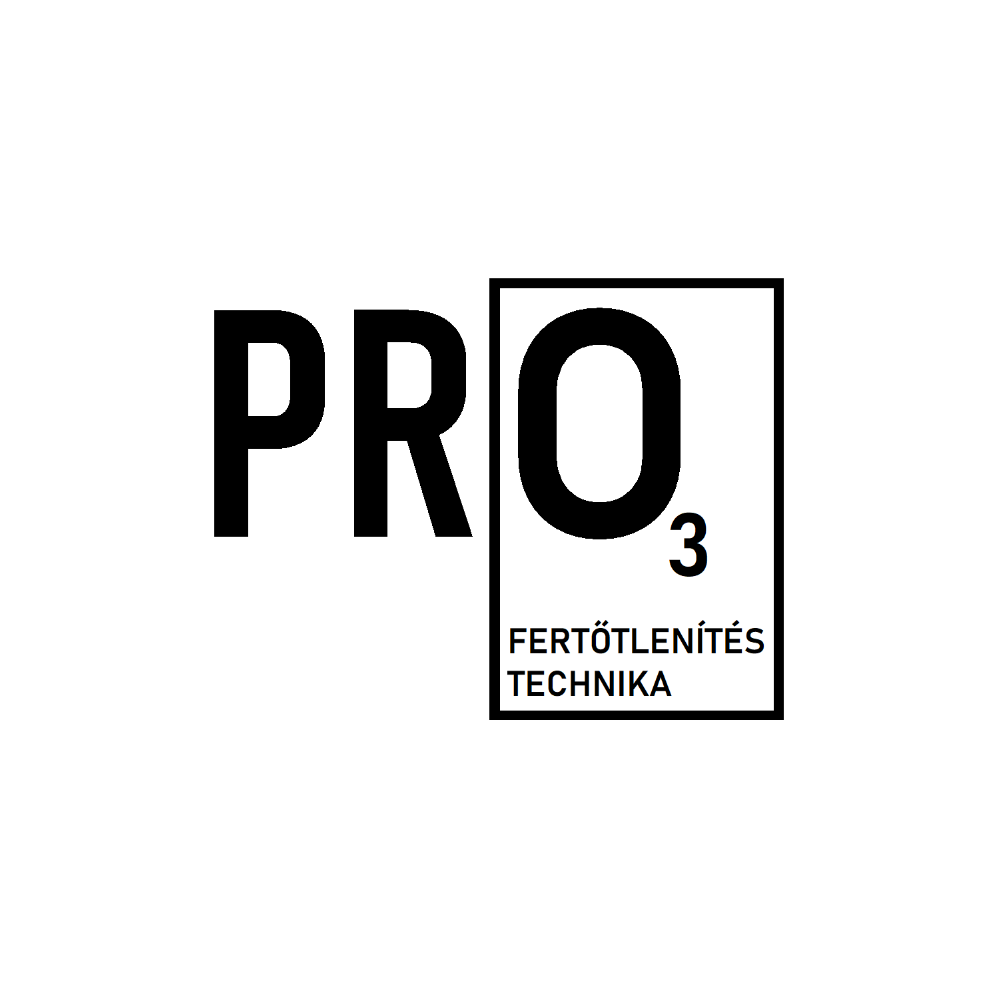

facebook.com/pro3fertotlenites
 Vállaljuk autók, haszongépjárművek, irodák, lakások, házak,
kollégiumi és szállodai szobák fertőtlenítését.
Budapest területén belül a kiszállás díjmentes, egyéb költségekkel nem kell számolnia.
A feladata mindössze felhívni minket a nap bármely szakában, időpontot egyeztetni,
és a fertőtleníteni kívánt helyiséget előkészíteni érkezésünkig a telefonon is egyeztetett
módon (személyek, növények, állatok, nem hermetikusan zárt élelmiszerek eltávolítása).
Budapest környéki település esetén a kiszállási díj egyeztetésre kerül, de célunk,
hogy minden ügyfelünket kiszolgáljuk.
Áraink
| Személyautó és haszongépjármű beltér: |
6.000 Ft |
| haszongépjármű raktere: |
+2.000 Ft |
| irodák, lakóhelyiségek: |
| 0-25 m2: |
10.000 Ft |
| 25-50 m2: |
15.000 Ft |
| 50-100 m2: |
20.000 Ft |
| 100-150 m2: |
25.000 Ft |